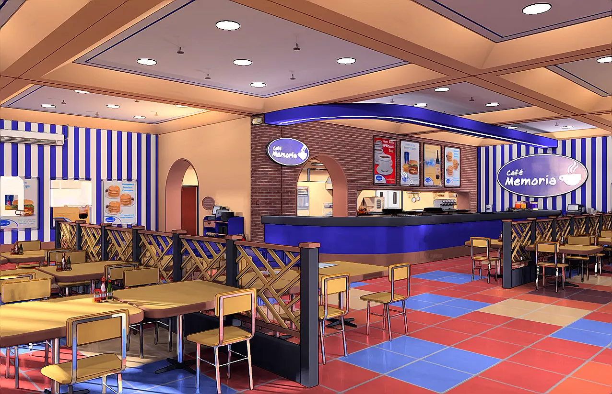
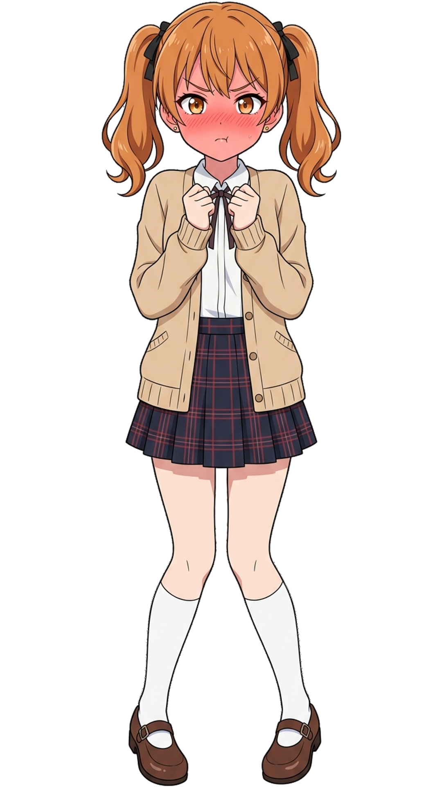
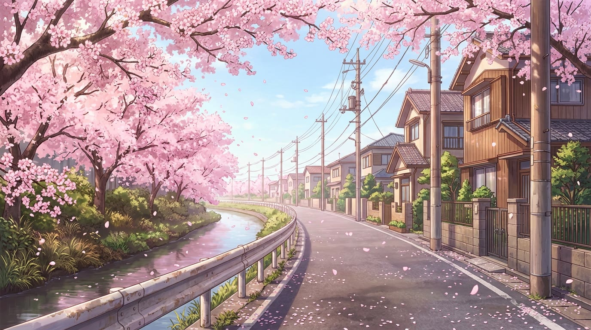
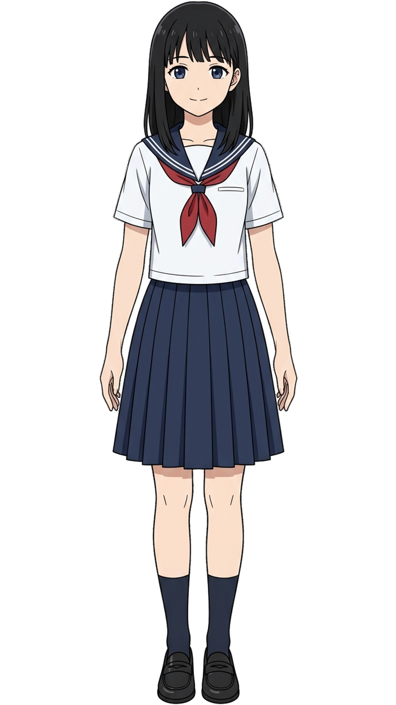
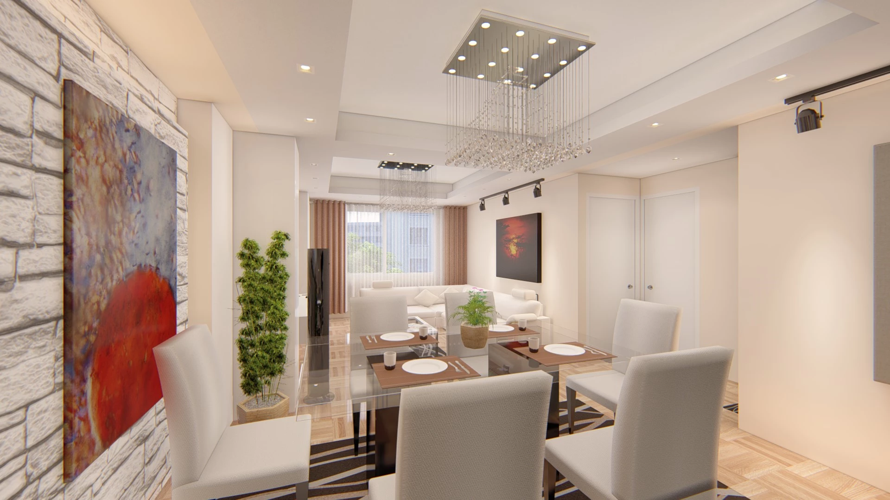
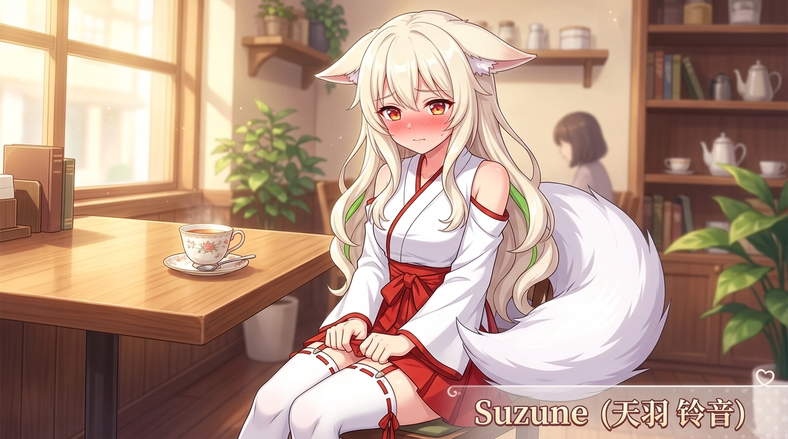
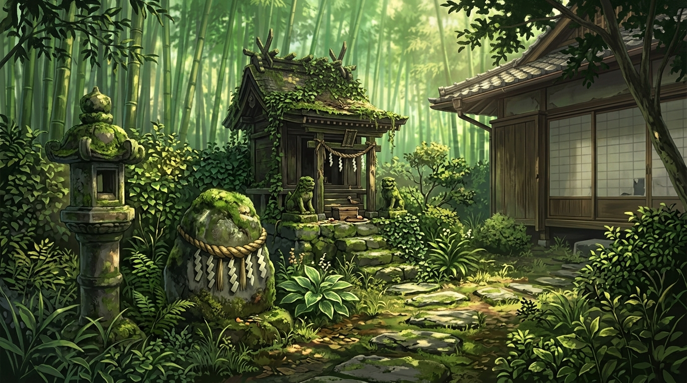

和我玩怪猎的网友、
竟然都是美少女？
「三种光」：纸（日光）· 幕（聚光）· 台（灯下）—— 半个游戏，半个工作室


RUN 01 · 继续 和我玩怪猎的网友竟然都是美少女？

RUN 02 喫茶常春藤与灵狐少女的恋爱契约
「……所以说！线下聚会的事，你们到底考虑得怎么样了嘛！再拖下去，活动都要结束了喂——」
「……所以说！线下聚会的事，你们到底考虑得怎么样了嘛！再拖下去，活动都要结束了喂——」
「那么——请各位，从这三条路里选一条吧。（茶还没凉，故事才刚开始。）」


「欢迎光临。……诶，是悠人君和大家呀，今天也坐老位置吗？」